일반기계기사 (2010-03-07 기출문제)
1과목: 재료역학
1. 폭 20cm, 높이 30cm의 직사각형 단면을 가진 길이 300cm의 외팔보는 자유단에 최대 몇 kN의 하중을 가할 수 있는가? (단, 허용 굽힘응력은 σa=15MPa이다.)
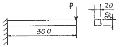
- 12
- 15
- 30
- 90
(정답률: 42%)

2. 다음 중 기둥의 좌굴에 대한 설명으로 옳은 것은?
- 좌굴이란 기둥이 압축하중을 받아 길이 방향으로 변위 되는 현상을 말한다.
- 도심에 압축하중이 작용하는 기둥의 좌굴은 안정성과 관련되어 있다.
- 좌굴에 대한 임계하중은 길이가 긴 기둥일수록 커진다.
- 편심 압축하중을 받는 기둥에서는 하중이 커져도 길이방향 변위만 발생한다.
(정답률: 31%)
3. 등분포 하중을 받고 있는 단순보와 양단 고정보의 중앙정에서 최대 처짐량의 비는? (단, 보의 굽힘강성 EI는 일정하다.)
- 3 : 1
- 5 : 1
- 24 : 1
- 48 : 1
(정답률: 34%)
4. 주응력에 대한 설명 중 틀린 것은?
- 주응력 상태에서 전단응력은 0이다.
- 주응력은 전단응력이다.
- 최대 전단응력은 주응력의 최대, 최소값의 평균치이다.
- 평면응력에서 주응력은 2개이다.
(정답률: 32%)
5. 지름 3mm의 철사로 평균지름 75mm의 압축코일 스프링을 만들고 하중 10N에 대하여 3cm의 처짐량을 생기게 하려면 감은 회수(n)는 대략 얼마로 해야 하는가? (단, 전단 탄성계수 G=88GPa이다.)
- n = 8.9
- n = 8.5
- n = 5.2
- n = 6.3
(정답률: 37%)
6. 길이가 L이고 단면적이 A인 봉의 단면에 수직 하중이 작용하고, 작용하중 방향으로 변형률 ε이 발생하였다면 이 봉에 저장된 탄성에너지 U는 어떻게 표현되는가? (단, 봉의 탄성계수는 E이다.)
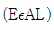
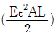
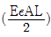
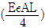
(정답률: 43%)
7. 길이 15m, 지름 10mm의 강통에 8kN의 안장 하중을 걸었더니 단성 변형이 생겼다. 이 때 늘어난 길이는? (단, 이 강재의 탄성계수 E=210GPa이다.)
- 7.3mm
- 7.3cm
- 0.73mm
- 0.073mm
(정답률: 42%)
8. 지름 d의 축에 암(arm)을 달고, P를 가할 때 축에 발생되는 최대 비틀림 전단응력은?
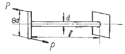
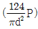
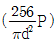
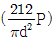
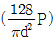
(정답률: 34%)
9. 단면적이 같은 원형과 정사각형의 단면 계수의 비는?
- 1 : 0.509
- 1 : 1.18
- 1 : 2.36
- 1 : 4.68
(정답률: 39%)
10. 그림과 같은 돌출보가 있다. ωℓ=P일 때 이 보의 중앙점에서 굽힘 모멘트가 0이 되기 위한 길이의 비 a/ℓ는? (단, 보의 자중은 무시한다.)
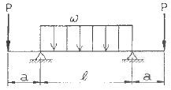
- 1/4
- 1/8
- 1/16
- 1/24
(정답률: 18%)
11. 그림과 같이 전체 길이가 3L인 외압보에 하중 P가 B점과 C점에 작용할 때 자유단 B에서의 처짐량은? (단, 보의 굽힘강성 EI는 일정하고, 지중은 무시한다.)
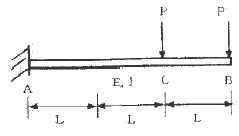
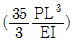
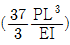
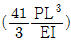
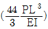
(정답률: 27%)
12. 지름 7mm, 길이 250mm인 연강 시험편으로 비틀림 실험을 하여 얻은 결과, 토크 4.08N·m에서 비틀림 각이 8°로 기록되었다. 이 재료의 전단 탄성계수는 약 몇 GPa인가?
- 64
- 53
- 41
- 31
(정답률: 34%)
13. 최대 사용강도(σmax)=240MPa, 지름 1.5m, 두께 3mm의 강재 원통형 용기가 견딜 수 있는 최대 압력은 몇 kPa인가? (단, 안전계수(SF)는 2이다.)
- 240
- 480
- 960
- 1920
(정답률: 29%)
14. 단면은 폭 5cm, 높이 3cm, 길이가 1m의 단순 지지보가 중앙에 집중하주 4kN을 받을 때 발생하는 최대 굽힘응력은 약 몇 MPa인가?
- 133
- 155
- 143
- 125
(정답률: 37%)
15. 그림과 같이 길이가 동일한 2개의 기둥 상단에 중심 압축 하중 2500N이 작용할 경우 전체 수축량은 약 몇 mm인가? (단, 단면적 A1=1000mm2, A2=2000mm2, 길이 L=300mm, 재료의 탄성계수 E=90GPa이다.)
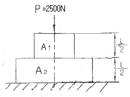
- 0.625
- 0.0625
- 0.00625
- 0.000625
(정답률: 38%)
16. 연강 1cm3무게는 0.0785N이다. 길이 15m의 둥근 봉을 매달 때 봉의 상단 고정부에 발생하는 인장응력은 몇 kPa인가?
- 0.118
- 1177.5
- 117.8
- 11890
(정답률: 31%)
17. 직사각형 단면(폭×높이)이 4cm×8cm이고 길이 1m 외팔보의 전 길이가 6kN·m의 통분포하중이 작용할 때 보의 최대 처짐각은? (단, 탄성계수 E=210GPa이고 부의 처짐은 무시한다.)(오류 신고가 접수된 문제입니다. 반드시 정답과 해설을 확인하시기 바랍니다.)
- 0.0028rad
- 0.0029rad
- 0.0008rad
- 0.0009rad
(정답률: 35%)
18. 그림과 같은 구조물에 1000N이 물체가 매달려 있을 때 두 개의 강선 AB와 AC에 작용하는 점의 크기는 약 몇 N인가?
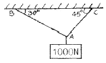
- AB=707, AC=500
- AB=732, AC=897
- AB=500, AC=707
- AB=897, AC=732
(정답률: 33%)
19. 반지름이 r인 원형 단면의 단순보에 전단력 F가 가해졌다면 이 때 단순보에 발생하는 최대 전단응력은?
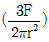
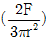
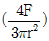
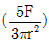
(정답률: 34%)
20. 어떤 탄성재료의 탄성계수 E와 전단 탄성계수 G사이에 성립하는 관계식으로 맞는 것은? (단, v는 재료의 포이슨(poisson)비이다.)
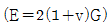
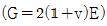
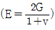
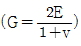
(정답률: 36%)
2과목: 기계열역학
21. 보일러 입구의 압력이 9800kN/m2이고, 복수기의 압력이 4900N/m2일 때 펌프 일은 약 몇 kJ/kg인가? (단, 물의 비체ㅈ거은 0.001m3/kg이다.)
- -9.79
- -15.17
- -87.25
- -180.52
(정답률: 46%)
22. 단순압축성 물질의 압력-체적-온도 사이의 관계식을 나타내는 상태방적식 Pv=RT에 대한 다음 설명 중 잘못된 것은?
- 이상 기체에 적용할 때 정확한 결과를 얻는다.
- 압력이 충분히 높은 기체에 적용할 때 정확한 결과를 얻는다.
- 일도가 충분히 낮은 기체에 적용할 때 정확한 결과를 얻는다.
- 분자 사이에 작용하는 힘이 없다고 가정할 수 있는 기체에 적용할 때 정확한 결과를 얻는다.
(정답률: 21%)
23. 잘 단열된 노즐에서 공기가 0.45MPa에서 0.15MPa로 팽창한다. 노즐 입구에서 공기의 속도는 50m/s, 온도는 150℃이며 출구에서의 온도는 45℃이다. 출구에서의 공기의 속도는? (단, 공기의 정압비열과 정적비열은 1.0035kJ/kg·K, 0.7165kJ/kg·K이다.)
- 약 350 m/s
- 약 363 m/s
- 약 455 m/s
- 약 462 m/s
(정답률: 22%)
24. 500W의 전열기로 4kg의 물을 20℃에서 90℃까지 가열하는데 몇 분이 소요되는가? (단, 전열기에서 열은 전부 온도 상승에 사용된다. 물의 비열은 4180J/kg·K이다.)
- 16
- 27
- 39
- 45
(정답률: 41%)
25. 다음 그림은 열교환기를 흐름 배열(flow arrangement)에 따라 분류한 것이다. 맞는 것은?
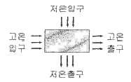
- 평행류
- 대향류
- 병행류
- 직교류
(정답률: 39%)
26. 고온열원(T1)과 저온열원 (T2) 사이에서 역카르노 사이클에 의한 열펌프(heat pump)의 성능계수는?
- (T1 - T2)/T1
- T2/(T1 - T2)
- T1/(T1 - T2)
- (T1 - T2)/T2
(정답률: 38%)
27. 상온의 감자를 가열하여 뜨거운 감자로 요리하였다. 감자의 에너지 변동 중 맞는 것은?
- 위치에너지가 증가
- 엔탈피 감소
- 운동에너지 감소
- 내부에너지가 증가
(정답률: 38%)
28. 체적이 0.1m3인 튼튼한 밀폐 용기에 물이 50kg 들어있으며 그 압력은 100kPa이다. 이 포화상태의 물을 가열할 경우 일어나는 변화로 알맞은 것은? (단, 물의 임계점에서의 비체적은 0.003155m3/kg이고, 100kPa에서의 포화수 및 포화증기의 비체적은 각각 0.001043m3/kg, 1.694m3/kg 이다.)
- 기화가 일어나 수증기로 바뀌면서 압력과 온도가 올라간다.
- 응축이 일어나 액체 상태로 바뀌면서 압력과 온도가 올라간다.
- 액체와 증기의 비율이 그대로 유지된 채로 압력과 온도가 올라간다.
- 기화가 일어나 수증기로 바뀌면서 압력과 온도는 그대로 유지된다.
(정답률: 11%)
29. 물체의 온도가 20℃에서 80℃로 되었다면 방사하는 복사에너지는 약 몇 배가 되는가?
- 1.2
- 2.1
- 4.0
- 5.0
(정답률: 29%)
30. 그림은 압력 온도선도이다. 다음 설명 중 틀린 것은?
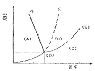
- (A)는 고체, (B)는 액체, (C)는 기체이다.
- (D)는 삼중점으로 물의 경우 압력은 대기압보다 낮다.
- (E)는 임계점이다.
- 융해곡선으로서 물은 파선 F에, 그 밖의 대부분의 물질은 실선 G에 해당한다.
(정답률: 30%)
31. 압력 250kPa, 체적 0.35m3의 공기가 일정 압력 하에서 팽창하여, 체적이 0.5m3로 되었다. 이때의 내부에너지의 증가가 93.9kJ이었다면, 팽창에 필요한 열랴은 약 몇 kJ인가?
- 43.8
- 56.4
- 131.4
- 175.2
(정답률: 34%)
32. 어느 열기관이 33kW의 일을 발생할 때 1시간 동안의 일을 열량으로 환산하면 약 얼마인가?
- 83600 kJ
- 104500 kJ
- 118800 kJ
- 988780 kJ
(정답률: 37%)
33. 내부에너지가 40kJ, 절대압력이 200kPa, 체적이 0.1m3, 절대온도가 300K인 계의 엔탈피는 약 몇 kJ인가?
- 42
- 60
- 80
- 240
(정답률: 36%)
34. 다음의 열역학 상태량 중 종량적 상태량은?
- 압력
- 체적
- 온도
- 밀도
(정답률: 39%)
35. 고체에 에너지를 전달하여 온도를 높이는 여러 가지 방법들 중에서 전달되는 에너지가 일이 아닌 것은?
- 프레스로 소성 변형시킨다.
- 전원을 연결하여 전류를 통과시킨다.
- 자기장을 가하여 자화시킨다.
- 강력한 빛을 쪼인다.
(정답률: 21%)
36. 분자량이 29이고, 정압비열이 10⑤J/kg·K인 기체의 기체상수는 약 몇 J/kg·K인가? (단, 일반기체상수는 8314.5J/kmol·K이다.)
- 976
- 287
- 34.7
- 29.3
(정답률: 39%)
37. 절대압력 100kPa, 온도 100℃인 상태에 있는 수소의 비체적(m3/kg)은? (단, 수소의 부자량은 2이고, 일반기체상수는 8.3145kJ/kmoi·K이다.)
- 약 15.5
- 약 0.42
- 약 3.16
- 약 0.84
(정답률: 40%)
38. 다음과 같은 온도범위에서 작동하는 카르노(Carnot)사이클 열기관이 있다. 이 중에서 효율이 가장 좋은 것은?
- 0℃ 와 100℃
- 100℃ 와 200℃
- 200℃ 와 300℃
- 300℃ 와 400℃
(정답률: 30%)
39. 이상기체 1kg이 가역등온 과정에 따라 P1=2kPa, V1=0.1m3로부터 V2=0.3m3로 변화했을 때 기체가 한 일은 몇 주울(J)인가?
- 9540
- 2200
- 954
- 220
(정답률: 28%)
40. 반데란스(van der waals)의 상태 방정식은
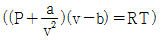
로 표시된다. 이 식에서 a/v2, b는 각각 무엇을 고려하는 상수인가?- 분자간의 작용 인력, 분자간의 거리
- 분자간의 작용 인력, 분자 자체의 부피
- 분자 자체의 중량, 분자간의 거리
- 분자 자체의 중량, 분자 자체의 부피
(정답률: 24%)
3과목: 기계유체역학
41. 유량 5m3/min, 속도 9m/s, 비중 1인 울 제트가 고정된 평면 판에 수직으로 충돌하고 있는 경우 평면 판에 작용하는 힘의 몇 N 인가?
- 45
- 450
- 750
- 7500
(정답률: 40%)
42. 에너지션(Energy Line)에 관한 설명으로 옳지 않은 것은?
- 위치수도+정압수도+동압수두를 연결한 선이다.
- 에너지선의 높이는 피토관을 사용하여 정체압을 측정함으로ㅆ 얻을 수 있다.
- 수력기울기선보다 정압수두 만큼 크다.
- 관로를 따라서 위치에 따른 전체 수두를 시각적으로 볼 수 있다.
(정답률: 28%)
43. 안지름 0.1m의 관로에서 관 벽의 마찰 손실수두가 속도수두와 같다면 그 관로의 길이는 몇 m인가? (단, 관마찰계수 f=0.03이다.)
- 1.58
- 2.54
- 3.33
- 4.52
(정답률: 36%)
44. 다음 중 무저항 합이 아닌 것은?
- Reynolds 수
- 양력계수
- 비중
- 음속
(정답률: 36%)
45. 유체 속에 잠겨있는 경사진 관의 윗면에 작용하는 압력힘의 작용점에 대한 설명 중 맞는 것은?
- 관의 도심보다 위에 있다.
- 관의 도심에 있다.
- 관의 도심보다 아래에 있다.
- 관의 도심과는 관계가 없다.
(정답률: 40%)
46. 원심 펌프로 기름을 압송한다. 이 펌프의 회전수느 1000rpm이고, 기름의 동점성계수는 7×10-4m2/s이다. 이 펌프의 모형을 만들어서 1.56×10-4m2/s의 동정섬계수를 갖는 공기를 이용하여 모형 실험을 하려고 한다. 모형 펌프의 지름을 원형 펌프의 3배로 하였을 때 모형 펌프의 회전수는 약 몇 rpm인가?
- 20
- 25
- 30
- 35
(정답률: 22%)
47. 그림과 같은 단면적 1m2인 탱크에 설치된 노즐이 수두 1m에서의 유량 Q를 2배로 하기 위해서는 수면 상에 몇 kg 정도의 피스톤을 놓아야 하는가?
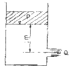
- 1000
- 2000
- 3000
- 4000
(정답률: 20%)
48. 지름이 1cm인 원통 관에 0℃의 물이 흐르고 있다. 평균 속도가 1.2m/s이고, 0℃ 물의 동정성계수가 1.788×10-6m2/s일 때, 이 흐름의 레이놀즈 수는?
- 2356
- 4282
- 6711
- 7801
(정답률: 43%)
49. 에너지의 차원을 옳게 표시한 것은? (단, F : 힘, M : 질량, L : 거리, T : 시간)
- [ML]
- [FLT-1]
- [ML2T-2]
- [MLT-2]
(정답률: 34%)
50. 지름 8cm의 구가 공기 중을 20m/s의 속도로 운동할 때 항력은 약 몇 N인가? (단, 공기 밀도는 1.2kg/m3, 항력계수는 Co는 0.6이다.)
- 0.724
- 7.24
- 72.4
- 0.0724
(정답률: 41%)
51. 내경 30cm의 원 관 속을 절대압력 0.32MPa, 온도 27℃인 공기가 4kg/s로 흐를 때, 이 원 관속을 흐르는 공기의 평균 속도는 약 몇 m/s인가? (단, 공기의 기체 상수 R=287J/kg·K 이다.)
- 15.2
- 20.3
- 25.2
- 32.5
(정답률: 29%)
52. 그림과 같이 속도의 크기 U로 x축과 임의의 각도 α를 가지고 흐르는 균일 직선유동에 대한 유동함수(stream function) ø를 극좌표 r, θ로 나타낸 것은?
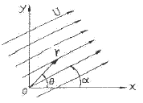
- ø = Ursin(θ-α)
- ø = Ursin(α-θ)
- ø = Urcos(θ-α)
- ø = Urcos(α-θ)
(정답률: 17%)
53. 절대압력을 정하는데 기준(영점)이 되는 것은?
- 게이지압력
- 표준대기압
- 국소대기압
- 완전진공
(정답률: 31%)
54. 어떤 액체의 밀도가 액체 표면으로부터 깊이(h)에 따라 선형으로 변화할 때 (ρ=ρo+Kh, ρo=액체표면에서의 밀도, K=상수) 깊에에 따른 압력을 식으로 표현하면?
- ρogh
- (ρo+Kh)gh
- (ρo-Kh)gh
- (ρo+K/2·h)gh
(정답률: 5%)
55. 다음의 속도장 중에서 연속방정식을 만족시키는 유체의 흐름은 어느 것인가? (단, u는 x방향의 속도성분, v는 y방향의 속도성분)
- u=2x2-y2, v=-2xy
- u=x2-y2, v=-4xy
- u=x2-y2, v=2xy
- u=x2-y2, v=-2xy
(정답률: 21%)
56. 평판을 지나는 경계층 유동에서 속도 분포가 경계층 바깥에서는 균일 속도, 경계층 내에서는 벽으로부터의 거리의 1차함수라고 가정하면 배제두께(displacement thickness)δ*와 경계층 두께 δ의 관계는?
- δ*=δ/4
- δ*=δ/3
- δ*=δ/2
- δ*=2δ/3
(정답률: 22%)
57. 그림과 같이 관로에 액주계가 설치되어 있을 때 공기의 속도는 약 몇 m/s인가? (단, 공기의 밀도는 1.23kg/m3이다.)
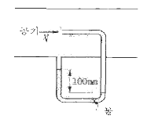
- 1.4
- 28.2
- 39.9
- 44.3
(정답률: 14%)
58. 나란한 두 개의 평판 사이의 증류 유동에서 속도 분포는 포물선 형태를 보인다. 평균 속도(Vmean)와 중심에서의 최대 속도 (Vmax)의 관계는?
- (Vmean)=1/2(Vmax)
- (Vmean)=2/3(Vmax)
- (Vmean)=3/4(Vmax)
- (Vmean)=π/4(Vmax)
(정답률: 29%)
59. 어떤 기름의 정성계수가 1.6×10-2N·s/m2이고 밀도는 800kg/m3이다. 이 기름의 동점성계수는 몇 m2/s인가?
- 2.0×10-2
- 2.0×10-3
- 2.0×10-4
- 2.0×10-5
(정답률: 40%)
60. 밀도가 500kg/m3인 원기동이 1/3만큼 액체면 위로 나온 상태로 떠있다. 이 액체의 비중은?
- 0.33
- 0.5
- 0.75
- 1.5
(정답률: 25%)
4과목: 기계재료 및 유압기기
61. 단조 작업한 강철 재료를 풀림하는 목적으로서 적합하지 않은 것은?
- 내부 응력 제거
- 경화된 재료의 연화
- 결정조직을 균일하게 조절
- 석출된 성분의 고정
(정답률: 50%)
62. 구리합금 중에서 가장 높은 경도와 강도를 가지며 피로한도가 우수하여 고급스프링 등에 쓰이는 것은?
- Cu-Be 합금
- Cu-Cd 합금
- Cu-Si 합금
- Cu-Ag 합금
(정답률: 53%)
63. 강의 표면경화처리에서 질화빔의 특징을 설명한 것 중 틀린 것은?
- 내마모성, 내식성이 크다.
- 경화증이 얇다.
- 경도는 침탄한 것보다 높다.
- 침탄법보다 처리시간이 짧다.
(정답률: 46%)
64. 탄소강에 미치는 인(P)의 영향에 대하여 가장 올바르게 표현한 것은?
- 강도와 경도는 증가시키나 고온취성이 있어 가공이 곤란하다.
- 인성과 내식성을 주는 효과는 있으나 청열취성을 준다.
- 경화등이 감소하는 것 이외에은 기계적 성질에 해로운 원소이다.
- 강도와 경도를 증가시키고 연신율을 감소시키며 상온취성을 일으킨다.
(정답률: 63%)
65. 회주철의 탄소당량(Carbon equlvalent)이 상태도의 공정점 이하의 값을 갖는다면, 회주철 제품생산 시 탄소당량의 변화에 따른 설명으로 틀린 것은?
- 탄소당량이 감소할수록 흑연크기는 작아진다.
- 탄소당량이 감소할수록 유동성은 감소한다.
- 탄소당량이 증가할수록 응고개시 온도는 감소한다.
- 탄소당량이 증가할수록 유리 페라이트는 증가한다.
(정답률: 33%)
66. 강력하고 인성이 있는 기계주철 주물을 얻으려고 할 때 주철 중의 탄소를 어떠한 상태로 하는 것이 가장 적합한가?
- 구성 흑연
- 유리의 편상 흑연
- 탄화물(Fe3C)의 상태
- 입상 또는 괴상흑연
(정답률: 45%)
67. 금속의 소성변형에서 열간가공의 효과가 아닌 것은?
- 조직의 치밀화
- 성형이 쉽고 대량생산이 가능하다.
- 조직의 균일화
- 연신율 및 단면 수축률의 감소
(정답률: 46%)
68. 강에서 열처리 조직으로 경도가 가장 큰 것은?
- 오스테나이트
- 마텐자이트
- 페라이트
- 펄라이트
(정답률: 73%)
69. 공석강의 탄소함유량으로 가장 적합한 것은?
- 약 0.08%
- 약 0.02%
- 약 0.2%
- 약 0.8%
(정답률: 50%)
70. 지름 15mm의 평강 통에 5000kgf의 인칭하중이 작용할 때 생기는 응력은 약 몇 kol/mm2인가?
- 10
- 15
- 24
- 28
(정답률: 53%)
71. 구조가 간단하여 값이 싸고 유암유 중의 이물질에 의해 고장이 생기기 어렵고 가촉한 조건에 잘 견디는 유압모터로 가장 적합한 것은?
- 페인 모터
- 기어 모터
- 맥시엄 피스톤 모터
- 레이디얼 피스톤 모터
(정답률: 58%)
72. 그림과 같은 유압 회로도에서 릴리프 밸브는?
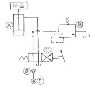
- A
- B
- C
- D
(정답률: 60%)
73. 1회전 당의 유량이 40cc인 베인모터가 있다. 공급 유압을 600N/cm2, 유량을 30L/minㅇ로 할 때 발생할 수 있는 최대 토크(torque)는 약 몇 N·m인가?
- 28.2
- 38.2
- 48.2
- 58.2
(정답률: 48%)
74. 그림과 같은 유압·공기압기호의 명칭은?
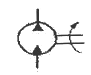
- 유압전도장치
- 정용량형 펌프·모터
- 차동실린더
- 가변용량형 펌프·모터
(정답률: 60%)
75. 관(튜브)의 끝을 넓히지 않고 관과 슬리브의 먹힘, 또는 마찰에 의하여 관을 유지하는 관 이음쇠는?
- 플랜지 관 이음쇠
- 스위블 이음쇠
- 를레어드 관 이음쇠
- 플레어리스 관 이음쇠
(정답률: 59%)
76. 유압 작동유가 구비하여야 할 조건 설명으로 틀린 것은?
- 넓은 온도 변화에 대하여 점도 변화가 작을 것
- 적합한 유막 강도가 있고 윤활성이 좋을 것
- 열을 잘 방출할 수 있을 것
- 공기의 용해도가 많을 것
(정답률: 71%)
77. 점성계수(coefticient of viscosity)는 기름의 좋은 성질이다. 점성이 지나치게 클 경우 유압기기에 나다니는 현상이 아닌 것은?
- 유동 저항이 지나치게 커진다.
- 마찰에 의한 동력손실이 증대된다
- 밸브나 파이프를 통과할 때 압력 손실이 커진다.
- 부품 사이에 윤활 작용을 하지 않는다.
(정답률: 56%)
78. 유압기기 중 오일의 점성을 이용한 기계, 유속을 이용한 기계, 팽창 수축을 이용한 기계로 분류할 때, 점성을 이용한 기계로 가장 적합한 것은?
- 토크 컨버터(torque converter)
- 쇼크 업소버(shock absorber)
- 압력계(pressure gage)
- 진공 개폐 밸브(vacuum open-closed value)
(정답률: 58%)
79. 다음 중 유압이 140kgf/cm2이고, 토출량이 200L/min 이상의 고압 대유량에 사용하기에 가장 적당한 펌프는?
- 회전 피스톤 펌프
- 기어 펌프
- 왕복동 펌프
- 베인 펌프
(정답률: 42%)
80. 압력 제어 밸브등로만 구성되어 있는 것은?
- 릴리프 밸브, 무부하 밸브, 스로틀 밸브
- 무부하 밸브, 체크 밸브, 감압 밸브
- 셔틀 밸브, 릴리프 밸브, 시퀀스 밸브
- 카운터 밸런스 밸브, 시퀀스 밸브, 릴리프 밸브
(정답률: 69%)
5과목: 기계제작법 및 기계동력학
81. 다음 중 구멍의 내면을 가장 정밀하게 가공하는 방법은?
- 드릴링(drilling)
- 소잉(sawing)
- 펀칭(punching)
- 호닝(honing)
(정답률: 56%)
82. 최소 측정값이 1/20mm인 버니어캘리퍼스에 대한 설명으로 옳은 것은?
- 본척의 최소 눈금이 1mm, 부척의 1눈금은 12mm를 25 등분한 것
- 본척의 최소 눈금이 1mm, 부척의 1눈금은 19mm를 20 등분한 것
- 본척의 최소 눈금이 0.5mm, 부척의 1눈금은 19mm를 25 등분한 것
- 본척의 최소 눈금이 0.5mm, 부척의 1눈금은 24mm를 20 등분한 것
(정답률: 51%)
83. 강이 표면 경화법에 해당 되지 않는 것은?
- 화염경화법
- 탈탄법
- 질화법
- 청화법(시안화법)
(정답률: 39%)
84. 용접봉의 방법 중 파괴시험안에 속하는 것은?(문제 오류로 문제 내용이 정확하지 않습니다. 정확한 내용을 아시는분 께서는 오류신고를 통하여 내용 작성 부탁 드립니다. 정답은 3번입니다.)
- 인관시험
- 초음파 단장시험
- 피로시험
- 용합시험
(정답률: 62%)
85. 어시닝센터의 프로그램시 테이블 이송과 관련이 가장 적은 것은?
- G00
- G01
- G03
- G04
(정답률: 23%)
86. M6×1.0의 나사에서 탭(tap)을 가공하고자 할 때 가장 적당한 드릴의 지름은?
- 7mm
- 6mm
- 5mm
- 4mm
(정답률: 33%)
87. 공구연삭기에 A60NSV의 연식숫돌을 고정하였다. 숫돌의 지름 300mm, 회전수가 1800rpm일 때 숫돌의 원주속도는 몇 m/min 정도인가?
- 약 1321.2
- 약 1450.3
- 약 1625.5
- 약 1696.5
(정답률: 42%)
88. 주조품 제조시 사용하는 모형(pattern)의 분류 중 구조에 따라 분류할 때 이에 속하지 않는 것은?
- 목혁(wood pattern)
- 콜조 모형(skeleton pattern)
- 코어 모형(core pattern)
- 현형(solid pattern)
(정답률: 34%)
89. 분괴압연 작업에서 만들어진 강편으로서 4각형 또는 정방형 단면의 소재로서 250mm×250mm에서 450mm×450mm정도의 크기를 갖는 비교적 큰 재료의 명칭은?
- 블릉(bloom)
- 슬래브(siab)
- 발릿(biliet)
- 플랫(flat)
(정답률: 18%)
90. 만네스만 압연기와 유사한 방법으로 파이프의 지름을 확대하는데 많이 이용하는 그림과 같은 구조로 되어 있는 것은?
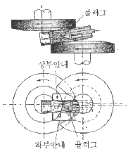
- 플러그밀(Piug mill)
- 필거 압연기(Pilger mill)
- 스티펠 천공기(Stiefel piercer)
- 아관기(Reeling machine)
(정답률: 31%)
91. 열차(A)는 108km/h의 일정한 속력으로 건널목 C의 900m 전방을 달리고 있다. 72km/h의 속력으로 달리던 자동차(S)는 건널목 전방 1000m 지점에서부터 가속 페달을 밟아 일정한 가속도로 주행한다. 자동차가 열차보다 3초 먼저 건널목을 통과하기 위하여 필요한 자동차의 가속도는 약 몇 m/s2인가?
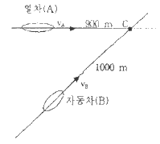
- 1.14
- 1.26
- 1.34
- 1.126
(정답률: 23%)
92. 90kg의 질량을 가진 기계가 스프링 상수 3600kN/m인 스프링과 감쇠기 위에 받쳐 있고 조화 가진력 Fosinwt가 작용한다면 공진 진폭은 몇 cm인가? (단, Fo는 50N이고, 점성 강쇠계수 c는 5N·s/m이다.)
- 5
- 7
- 1
- 1.5
(정답률: 7%)
93. 지구 중심을 중심으로 원 궤도를 그리며 비행하기 위한 인공위성의 속력은 약 몇 km/s인가? (단, 인공위성은 지표면으로부터 고도 300km로 비행하며 지구의 반경 R=6371km이다.)
- 5.73
- 6.73
- 7.73
- 8.21
(정답률: 21%)
94. 다음 1자유도계에서 t=1s일 때 변위는 약 몇 mm인가?
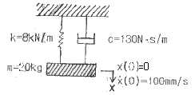
- 0.10
- 0.15
- 3.03
- 5.07
(정답률: 9%)
95. 질량 1000kg인 자동차에서 엔진으로부터 바퀴까지의 동력전달효율은 ε=0.63이다. 자동차가 일정한 속도 V=60m/s로 달릴 때 바람의 저항력이 Fo=80N이라면, 동력이 네 바 부퀴에 모두 전달된다고 가정하고 엔진에 의하여 공급되는 동력은 약 몇 kW인가?
- 7.31
- 7.62
- 7.89
- 8.24
(정답률: 16%)
96. 승용차와 트럭이 동일한 속도로 마주보며 주행하다가 정면으로 충돌하였다. 이때 일반적으로 승용차의 운전자가 더 큰 충격을 받게 되는데 그 이유로 가장 타당한 설명은?
- 승용차의 크기가 작기 때문이다.
- 승용차가 트럭에 비해 가볍기 때문이다.
- 충돌시 트럭에 작용하는 충격력이 더 크기 때문이다.
- 충돌시 승용차에 작용하는 충격력이 더 크기 때문이다.
(정답률: 24%)
97. 길이가 1m안에 무게가 5kg인 균일철 막대가 그림과 같이 지지되어 있다. A점을 일자로 되어 있어 B점이 연결된 줄이 갑자기 끊어졌을 때 막대는 자유로이 회전한다. 막대가 수직 위치에 도달한 순간 가속도는 약 몇 rad/s인가?
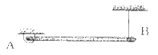
- 3.12
- 3.43
- 3.91
- 5.42
(정답률: 4%)
98. 그림과 같이 일단이 수직으로 매달려서 진자와 같이 한 평면 내에서 진동하는 가늘고 긴 막대의 고유 주기는? (단, 막대의 질량은 m이고 길이는 L이다.)
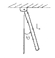
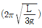
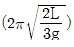
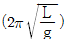
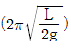
(정답률: 15%)
99. x(t)=Xsin(wt+ø)의 진동을 하고 있는 경우 맞는 것은?
- 진폭은 X이고 위상각은 ø이며, 고유진동수는 wt인 진동이다.
- 진폭은 X/2이고, 위상각이 ø인 진동이다.
- 각진동수가 w이며, 위상각은 wt인 진동이다.
- 진폭이 X이고, 각진동수가 w인 진동이다.
(정답률: 18%)
100. 그림과 같은 질량 3kg인 원판의 반지름이 0.2m일 때 x-x'축에 대한 질량 관성모멘트의 크기는 몇 kg·m2인가?
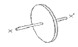
- 0.03
- 0.04
- 0.⑤
- 0.06
(정답률: 24%)